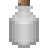

To be able to craft anything at all, you need a crafting grid. A crafting grid consists of a number of inventory slots and you can place and move and remove items from it like you can with an inventory. To craft, the items have to be arranged somehow in the crafting grid. Next to a crafting grid there is one output slot, in which the craft appears if you arranged the items in a valid way. Click on this symbol with the left mouse button to make this craft once. The needed items in the crafting grid will be used up. Click on the output slot with the middle mouse button to make this craft up to ten times (depending on how much items are left in the crafting grid). Crafting generally takes no time and you can use the resulting items immediately.
Crafting grids generally work like inventories. So a crafting grid found in your inventory menu can be used/abused as an extension of the player inventory.
There are are two kinds of crafting recipes, shaped ones and shapeless ones.
For a shaped recipe, the items have to be arranged into an exact pattern. If a crafting recipe takes up a smaller rectangle than the crafting grid, it can be moved on any part of the crafting grid. For example, a 2x2 recipe can be arranged on the top left, top right, bottom left or bottom right on a 3x3 crafting grid. If a crafting recipe uses more space than available in the crafting grid, you are unable to craft this item with it. You need a larger one.
For a shapeless recipe, the necessary items just have to be placed on any available slots of the crafting grid. Stacking items does not work, however.
Most crafting recipes are shaped recipes. If not noted otherwise, it is assumed that a crafting recipe is shaped.
| Item | Ingredients | Grid |
|---|---|---|
| Bronze Ingot | Steel Ingot + Copper ingot | |
| Bronze Ingot | Steel Ingot + Copper ingot |  |
| Bronze Ingot | Steel Ingot + Copper ingot |  |
| Item | Ingredients | Grid |
|---|---|---|
| Paper | Papyrus |  |
| Paper | Papyrus | |
| Paper | Papyrus |  |
| Block | Burning time in seconds | Items smelted for fuel | |
|---|---|---|---|
 |
Coal Block | 370 | 123 1/3 |
| Lava Bucket | 60 | 20 | |
 |
Coal Lump | 40 | 13 1/3 |
 |
Jungle Tree | 38 | 12 2/3 |
 |
Acacia Tree | 34 | 11 1/3 |
 |
Tree | 30 | 10 |
 |
Pine Tree | 26 | 8 2/3 |
| Aspen Tree | 22 | 7 1/3 | |
 |
Cactus | 15 | 5 |
And many more…
| Input | Output | Smelting time | Description | ||
|---|---|---|---|---|---|
 |
Flour |  |
Bread | 15s | Can be eaten to restore health. |
 |
Cobblestone |  |
Stone | 3s | Used as decoration. |
 |
Mossy Cobblestone | |
Stone | 3s | Used as decoration. |
 |
Desert Cobblestone |  |
Desert Stone | 3s | Used as decoration. |
 |
Clay Lump |  |
Clay Brick | 3s | Used to craft bricks. |
| Copper Lump |  |
Copper Ingot | 3s | Can be combined with a steel ingot to make a bronze ingot. | |
| Gold Lump | Gold Ingot | 3s | Used for crafting Gold Block and Skeleton Key. | ||
 |
Skeleton Key | Gold Ingot | 5s | Used for crafting Gold Block and Skeleton Key. | |
| Iron Lump | Steel Ingot | 3s | Used for crafting several items. | ||
|  | Heavy Steel Bottle | Steel Ingot | 3s | Used for crafting several items. | |
| Sand/Desert sand |  |
Glass | 3s | Used as decoration or a building material. | |
| Pile of Glass Fragments | |
Glass | 3s | Used as decoration or a building material. | |
| Obsidian Shard | Obsidian Glass | 3s | Used as decoration or a building material. |
And many more…